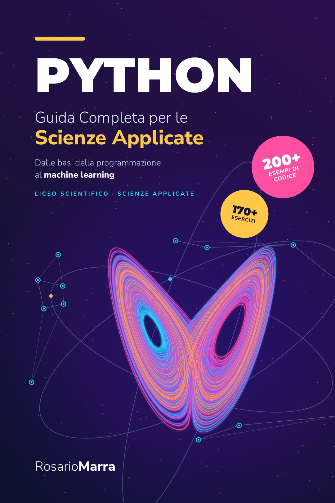

Python per le Scienze Applicate: il mio nuovo libro
Un libro per imparare a programmare pensando da scienziati: si parte da zero e si arriva a simulazioni, metodi numerici e reti neurali.

- Titolo
- Python per le Scienze Applicate. Guida completa dalle basi della programmazione al machine learning
- Pagine
- 333
- Contenuti
- Oltre 200 esempi di codice e più di 170 esercizi
- ISBN
- 979-8141166006
Perché l'ho scritto
Python è il linguaggio con cui oggi lavorano fisici, biologi, ingegneri e data scientist. Eppure a scuola spesso viene insegnato come un argomento a sé, con esercizi su stringhe e liste che non parlano a nessuno. In aula ho visto il contrario: gli studenti si accendono quando il codice serve a capire qualcosa che studiano già, come un moto, una reazione chimica o la crescita di una popolazione.
Da qui l'idea del libro: insegnare Python partendo da zero, ma sempre in dialogo con la matematica, la fisica, la chimica e la biologia. È pensato per il Liceo Scientifico opzione Scienze Applicate, ma va bene per chiunque voglia programmare con un taglio scientifico.
Cosa trovi dentro
- Le basi, spiegate con chiarezza: algoritmi, variabili, cicli, funzioni e oggetti.
- Simulazioni con NumPy e Matplotlib: moti, orbite, pendoli ed epidemie.
- Metodi numerici: ricerca degli zeri, integrali, Monte Carlo e Runge-Kutta.
- Statistica e analisi dei dati con pandas.
- Machine learning e reti neurali costruite da zero, per capire cosa succede davvero dentro un modello.
Ogni capitolo alterna spiegazione, esempi verificati ed esercizi: oltre 200 esempi di codice e più di 170 esercizi in tutto.
Un assaggio: il pendolo
Nei libri di fisica il pendolo si studia quasi sempre nell'approssimazione delle piccole oscillazioni. Con poche righe di Python si può andare oltre e simularlo per angoli qualsiasi, aggiornando passo dopo passo velocità angolare e posizione:
from math import sin
g, L, dt = 9.81, 1.0, 0.001
theta, omega = 1.2, 0.0 # angolo iniziale (rad), velocità angolare
while theta > 0:
omega += -(g / L) * sin(theta) * dt
theta += omega * dtÈ un'idea semplice, ma è la stessa che sta alla base di molte simulazioni scientifiche. Nel libro questo approccio viene ripreso e migliorato: si confrontano i metodi numerici, si misura l'errore e si disegnano i grafici del moto.
A chi è rivolto
- Studenti del Liceo Scientifico opzione Scienze Applicate e degli istituti tecnici.
- Docenti che cercano esempi ed esercizi pronti da portare in classe.
- Chiunque voglia imparare Python con esempi concreti, senza prerequisiti di programmazione.
Le dispense, le esercitazioni e i materiali collegati al libro sono disponibili gratuitamente nella sezione Materiale didattico di questo sito.
Il libro è disponibile su Amazon
Python per le Scienze Applicate si ordina direttamente da Amazon. Se lo leggi, mi farebbe piacere sapere cosa ne pensi.
Acquista su AmazonAltri articoli